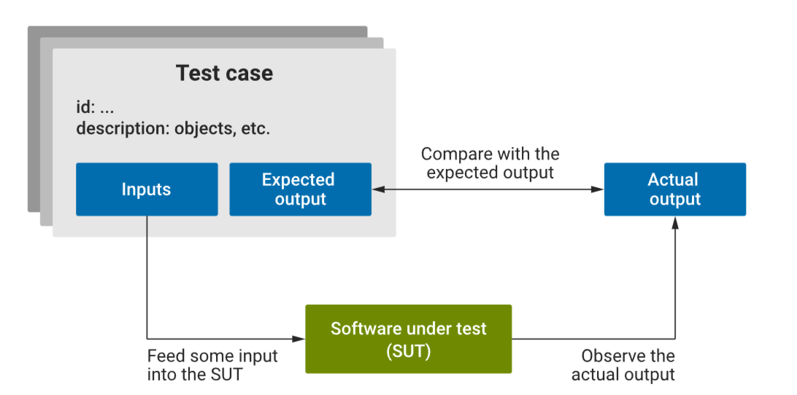
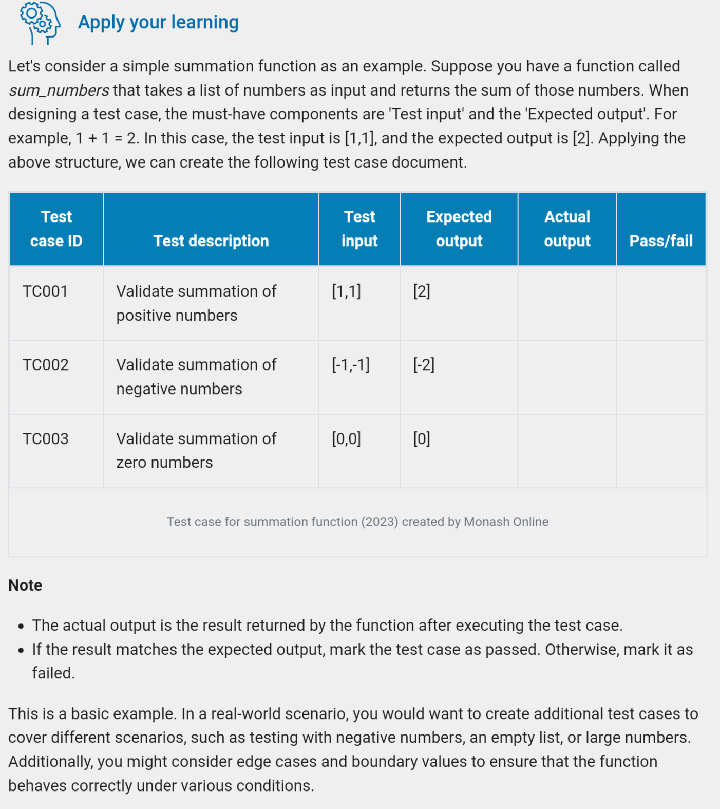
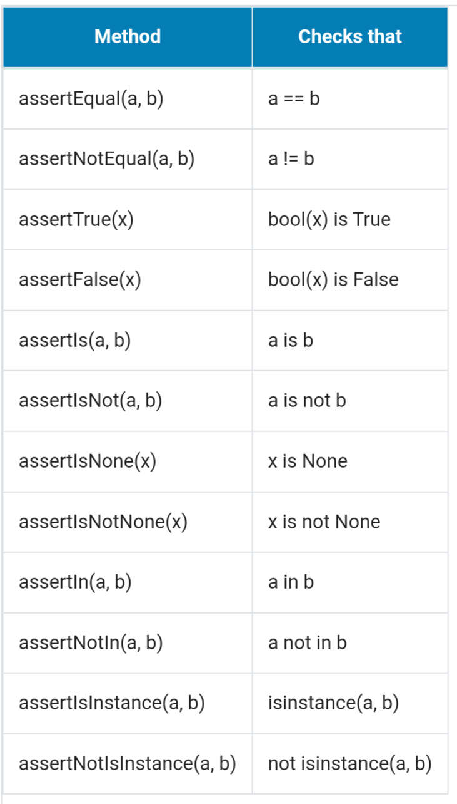

Module 5: Unit Testing and Code Coverage
Unit testing ensures reliability and functionality of individual units
of code. Code coverage measures the extent to which the source code is
tested.
What is unit testing?
A software testing technique where individual units or components of a
software application are tested in isolation to ensure they are
correct. The smallest testable part of an application. Python uses
pytest.
Characteristics of unit testing:
- Isolation: test is isolated from rest of app. Dependencies are
often mocked
- Automation: tests are usually automated
- Repeatable: test should yield consistent results
- Fast execution: fast to enable quick feedback
- Early detection of defects: find problems early

Characteristics of effective test cases
- Relevance: tied to requirements that are critical to the app
- Clarity and simplicity: easy to understand with simple test
data
- Independence: modular
- Non-redundancy: no duplication
Test case design
Components:
- Test case ID
- Test description: what init, function, or feature is being
verified
- Test input
- Expected output
- Actual output
- Pass/ fail

Unit testing in Python

Code coverage
Assertions
Code coverage is a metric used to measure the proportion of code
executed in automated testing.
Code coverage metrics:
- Line coverage: % of lines executed at least once during
testing
- Branch coverage: % of decision pointws taken during testing
- Statement coverage: statements rather than lines of code
- Function coverage: % of methods invoked during testing